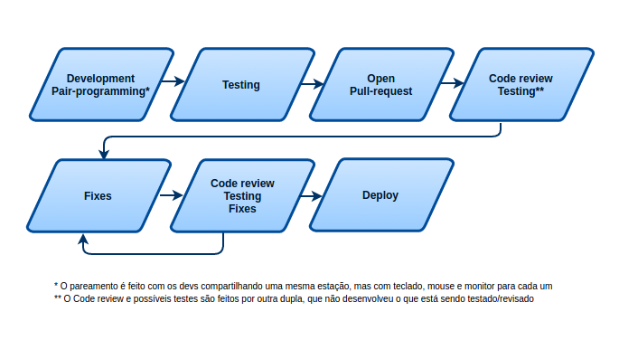

Terraformando tudo - parte 1
Publicado em:
@lucasvasconcelos
Veja os outros posts da série: - Terraformando tudo - parte 2 - Terraformando tudo - parte 3
Infrastructure as Code no Elo7
Esse post dá início a uma série de posts intitulada Terraformando tudo. Nessa série iremos mostrar o caminho que trilhamos (e os percalços que tivemos) no Elo7 e o que ainda falta para concluir nosso objetivo de ter toda nossa infraestrutura sendo gerenciada por código, ou seja, termos Infrastructure as Code.
Mas o que seria Infrastructure as Code (ou IaC para os mais íntimos)?
Além de ser mais uma buzzword, Infrastructure as Code é o ato de gerenciar a infraestrutura (seja ela física ou virtual) e suas configurações. Tal gerenciamento deve ser feito através de código versionado, seja utilizando ferramentas desenvolvidas in-house ou de mercado. Esse processo é de grande importância para a cultura DevOps, possibilitando que todo o time de Engenharia seja responsável pela infraestrutura de suas aplicações e trazendo diversos benefícios: * Velocidade: execução rápida, evitando processos manuais; * Padronizações: melhora a garantia de que os padrões definidos sejam seguidos; * Evita erros manuais: ao não ser necessário utilizar ferramentas interativas, diminui a chance de falhas; * Qualidade: pode-se inserir no processo um code review, garantindo a qualidade do código/padrões; * Fácil reprodutibilidade: é fácil escalar a infra ou cloná-la em outro datacenter.
Pelos motivos supracitados e ainda outras vantagens, decidimos ter IaC aqui no Elo7 e, pelo título do post, é fácil ver que escolhemos o Terraform para nos ajudar nessa tarefa, certo? :-). Mas como fizemos essa escolha? Hype? Know-how prévio? Nome bonito? Ninguém sabe?!?
Negativo! Apesar de ágeis e early adopters, pesamos nossas decisões em diversos aspectos, como curva de aprendizado, escopo da resolução do problema, possíveis lock-ins e escala a longo prazo.
E é exatamente disso que se trata esse primeiro post, um comparativo das features - que nos interessam - de cada ferramenta analisada e como nos pautamos para decidir utilizar o Terraform. Em nenhum momento esse post se trata de decidir se uma ferramenta é melhor que outra, e sim, da ferramenta que é melhor para nós e para nossas necessidades.
Um paralelo com o desenvolvimento das nossas aplicações
Ao buscar codificar nossa infra, tínhamos como intuito utilizar o mesmo fluxo que nós utilizamos para o desenvolvimento de nossas aplicações. Para termos o máximo de qualidade em tudo que fazemos, temos um fluxo rígido de desenvolvimento, que consiste em:

O processo de desenvolvimento do código responsável por nossa infra deveria se encaixar nesse fluxo, ou pelo menos em grande parte dele. Principalmente nas etapas de pair-programming e review.
Além desse principal requisito, também temos algumas outras necessidades: * Suporte à AWS; * Opensource (com comunidade ativa :P); * Foco em infra: nosso ambiente roda todo com Docker + Fleet (e no futuro Kubernetes, teremos novidades aqui no blog huhuhu). Portanto, não iríamos fazer uso das features de automação de aplicações/configurações, por exemplo.
E ainda contamos com alguns requisitos não tão importantes, mas desejáveis: * Curva de aprendizado curta; * Que a ferramenta não seja desenvolvida em uma linguagem exótica (tipo Erlang) para que uma possível contribuição seja factível; * Suporte ao GCP (Google Cloud Platform);
Nossas opções
Fizemos uma pré-seleção de algumas ferramentas para, dentre elas, escolher a que melhor cumpre os nossos requisitos. As ferramentas foram escolhidas baseando-se nas funcionalidades, know-how prévio e confiabilidade. Todas as ferramentas escolhidas possuem a capacidade de cumprir com os nossos requisitos principais. São elas: * Puppet; * Chef; * Ansible; * Terraform; * AWS CloudFormation;
Vale citar que, do ponto de vista de IaC, todas elas seguem as mesmas práticas, que ajudam principalmente na curva de aprendizado para quem já teve experiência prévia com algumas delas. As ferramentas são: * Declarativas; * Buscam um estado final para a infra que está sendo criada; * Controlam recursos da infra/configuração; * Reutilização de código/referência entre recursos.
Os próximos sub-tópicos discutem os motivos que foram importantes para nós na escolha do Terraform.
AWS CloudFormation
Não poderíamos deixar de analisar a ferramenta oferecida pela própria AWS para gerenciamento de infraestrutura como código. Por ser da própria AWS, já podíamos contar com suporte a todos os recursos existentes (EC2, S3, Route53, Redshift, Lambda, etc), além de performance e confiabilidade no que está sendo executado.
O CloudFormation utiliza a sintaxe JSON no seu código. Nesse exemplo criamos uma instância no EC2 (vários campos foram omitidos):
{
"Type" : "AWS::EC2::Instance",
"Properties" : {
"AvailabilityZone" : "us-west-1a",
"ImageId" : "ami-696e652c",
"InstanceType" : "t1.micro",
"SecurityGroups" : [ "sample-group" ],
...
}
}
Apesar de não gostarmos da sintaxe JSON do CloudFormation, decidimos apostar na ferramenta. Mas, o feitiço pode voltar contra o feiticeiro. O que podia ser considerado uma vantagem pra nós, que é o fato da ferramenta estar dentro da AWS, também pode ser um ponto negativo. O CloudFormation só dá suporte à AWS (obviamente :P) e não gostamos de lock-ins. Temos planos futuros de rodar em um ambiente multi-cloud e essa característica tirou o CloudFormation da nossa lista.
Puppet e Chef
Puppet e Chef são as opções mais conhecidas quando falamos de automação em geral, seja IaC ou gerenciamento de configurações. Muito poderosas, são capazes de gerenciar data-centers gigantescos.
Eles já estão na estrada há um bom tempo e diversos padrões de DevOps e IaC foram inspirados em casos de uso dessas ferramentas. Ambas são escritas em Ruby e são production-ready, possuindo versões da comunidade e Enterprise.
O Puppet possui uma linguagem DSL (Domain Specific Language) declarativa. Nesse exemplo, ele está criando uma instância EC2:
ec2_instance { 'sample-instance':
ensure => present,
region => 'us-west-1',
availability_zone => 'us-west-1a',
image_id => 'ami-696e652c',
instance_type => 't1.micro',
security_groups => ['sample-group'],
}
Por sua vez, o Chef possui uma linguagem própria também, bem mais parecida com Ruby e imperativa. Exemplo de como um ELB (Elastic Load Balancer) é criado com o Chef:
aws_elastic_lb 'elb' do
aws_access_key aws['aws_access_key_id']
aws_secret_access_key aws['aws_secret_access_key']
name 'LB_tech-blog'
action :register
end
As duas ferramentas são de uma época ‘pré-cloud’ (pré popularizacão, no caso), ou seja, foram inicialmente concebidas para automação de configurações em data-centers virtualizados/bare-metal. Atualmente, já suportam a criação de infraestrutura na nuvem. Portanto, possuem um arcabouço extenso de recursos de automação.
Para nós, as duas ficaram no mesmo balaio, além do escopo de atuação delas ser muito grande, o que elas nasceram para fazer, que é o gerenciamento de configurações (exemplo acima), não iríamos utilizar. A necessidade de ter um client nos servidores para execução das automações também não nos agrada muito.
A quantidade de recursos nativos disponíveis também é pequena, com destaque para o Chef que nem a criação de instâncias no EC2 possui nativamente (por isso que no exemplo é mostrada a criação de um ELB ao invés de uma instância EC2, como nos exemplos de outras ferramentas).
Ansible
O Ansible, escrito em Python, é uma ferramenta mais moderna que nasceu após a popularização da nuvem. Logo de cara, uma grande vantagem em cima das ferramentas já comentadas é que não é necessário um client rodando nos servidores, pois ele utiliza SSH para executar os comandos remotamente.
Um outro detalhe importante do Ansible é a utilização da sintaxe YAML para escrita dos códigos, que pode ajudar bastante na curva de aprendizado. Segue o mesmo exemplo utilizado acima usando o Ansible:
- name: Cria uma instância EC2
ec2:
group: sample-group
instance_type: t1.micro
image: "ami-696e652c"
zone: "us-west-1a"
register: ec2
O Ansible também cai no problema do Puppet e Chef, em que sua especialidade é gerenciamento de configurações. Um outro problema do Ansible é o suporte apenas aos principais serviços da AWS, não dando suporte ao EMR (Elastic Map Reduce), por exemplo.
Entretanto, é válido citar que de todas as ferramentas já comentadas, o Ansible é a que mais se encaixou nas nossas necessidades. Se o Terraform tivesse alguma característica que fizesse com que ele fosse removido da nossa lista, o Ansible seria nossa escolha.
Conclusão: Terraform
Ao analisar friamente o Terraform, separamos algumas características que chamaram nossa atenção. Todas elas se encaixam bem nos nossos requisitos, inclusive nos requisitos desejáveis.
Primeiramente, o Terraform tem o suporte da Hashicorp, empresa que contribui com outros diversos projetos Opensource já conhecidos, como o Consul e Vault. É um projeto escrito em Golang com comunidade muito ativa e um ciclo de releases de aproximadamente 20 dias, com cada release sempre trazendo novas features e fixes importantes.
Foi a ferramenta que coube exatamente no nosso escopo de criação de infra e somente infra, sem se preocupar com a aplicação. Possui suporte à AWS (suporte inclusive aos serviços menos utilizados, como o Elastic Map Reduce) e GCP, além de diversos outros providers como Azure e Openstack.
A linguagem utilizada para criação da infra no Terraform é a HCL (Hashicorp Configuration Language), que é uma linguagem declarativa desenvolvida pela Hashicorp. Apesar de parecer um pouco estranha no início, nos acostumamos facilmente com ela. Segue um exemplo de criação de uma instância EC2 com o Terraform:
resource "aws_instance" "tech-blog" {
ami = "ami-696e652c"
instance_type = "t1.micro"
availability_zone = "us-west-1a"
security_groups = [ "sample-group" ]
}
Encontramos alguns posts sobre o Terraform, uns falando bem e outros falando mal, principalmente por ser uma ferramenta nova, que realmente carece de algumas funcionalidades. Fizemos validações e diversas simulações, principalmente de desastres. Estávamos muito precupados com comportamentos inesperados na hora de criar/destruir a nossa infra, principalmente mudanças críticas, como alteração de um registro DNS no Route53. Então, queríamos conhecer exatamente como a ferramenta se comporta em diversas situações.
Encontramos sim, alguns problemas com a nossa escolha. Tanto técnicos como na definição de um fluxo que seja capaz de ser implementado para todo o time da Engenharia Elo7. Um assunto polêmico que fez a gente pensar bastante foi como íamos tratar a infra já existente, criada na base do mouse… Mas esses serão assuntos para os próximos posts! :D
Pretendemos voltar logo mais, nesse mesmo canal, com os próximos posts dessa série, dando exemplos práticos de como utilizamos o Terraform e como resolvemos problemas conhecidos e não conhecidos nessa nossa aventura de Terraformar tudo.